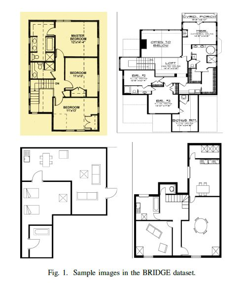
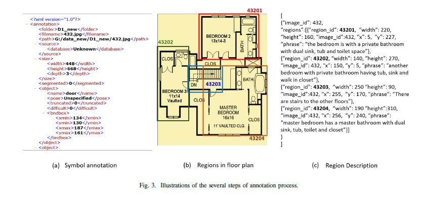
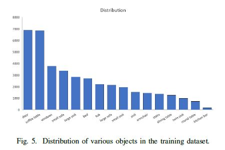
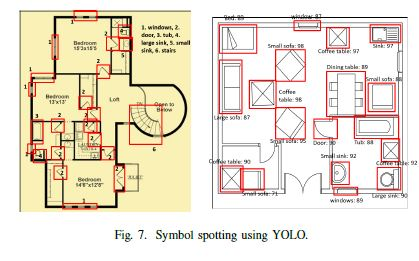
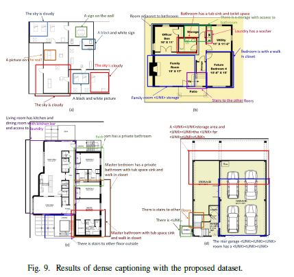
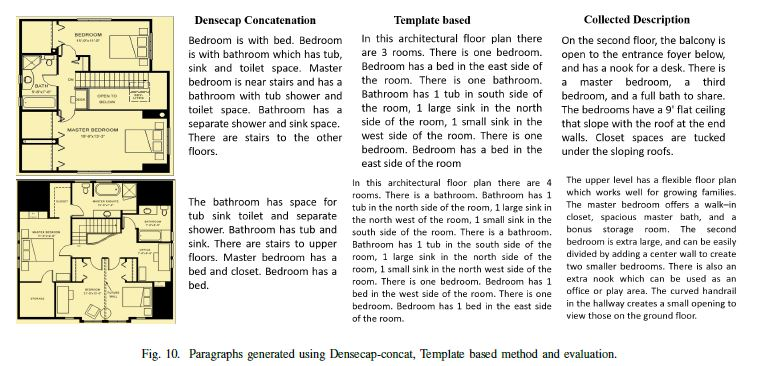

Abstract |
|
Abstract—In this paper, a large scale public dataset containing floor plan images and their annotations is presented. BRIDGE (Building plan Repository for Image Description Generation, and Evaluation) dataset contains more than 13000 images of the floor plan and annotations collected from various websites, as well as publicly available floor plan images in the research domain. The images in BRIDGE also has annotations for symbols, region graphs, and paragraph descriptions. The BRIDGE dataset will be useful for symbol spotting, caption and description generation, scene graph synthesis, retrieval and many other tasks involving building plan parsing. In this paper, we also present an extensive experimental study for tasks like furniture localization in a floor plan, caption and description generation, on the proposed dataset showing the utility of BRIDGE. Index Terms—Floor Plan; Dataset; Evaluation; Captioning |
Literature Survey |
|
Various floor plan datasets have been proposed in past for purposes such as symbol spotting, retrieval, semantic and layout segmentation. Table I lists out the details of the publicly available datasets, number of samples present in them, and a brief description. There are several techniques in the literature [1], which have used one or more of these four datasets. |
|  |
|
images and over one and a half million captions (5 captions per image). The dataset is currently being used for caption generation, object segmentation tasks. |
Construction Of BridgeTo construct the BRIDGE dataset we have followed two approaches. First, we have collected floor plan images from the publicly available datasets (i.e., ROBIN, SESYD etc.). In the second approach, we have collected the remaining floor plan images from the internet. In total, we have over 13000 floor plan images in this dataset. Along with the images BRIDGE also has object annotations, region descriptions, and paragraph description for the floor plans. Till date, this is the largest annotated floor plan dataset created for the document analysis and research (DAR) community. For creating annotations we asked volunteers for marking bounding boxes around each decor items. We used LableImg graphical annotation tool [13] for marking the bounding boxes in the images. For generating region descriptions also we used the same tool and later converted them in the JSON format. |
|  |
|
A. Floor Plan images |
|
B. Symbol Annotations |
C. Caption Annotations |
Experiments
All the experiments on the proposed dataset were performed on a system with NVIDIA GPU Quadro P 6000, with 24 GB GPU memory, 256 GB RAM. |
|  |
B. Caption generation |
|   |
C. Description synthesis |
|  |
ConclusionIn this paper, we presented, for the first time, a novel large scale (13000+ images) floor plan dataset BRIDGE, which has images and metadata. This dataset could be used for various tasks on floor plan analysis using deep learning model. |